Internal Verification Record · Phase 5
The render engine was swapped from hand-rolled Sharp pixel math to RawTherapee
(rawtherapee-cli driven by PP3 processing profiles), run from a local binary
in dev and inside a Vercel Sandbox microVM in production. The vision agent still
decides edits entirely in semantic sliders (a flat DevelopConfig) and
never learns the PP3 format; a single deterministic server-side mapper,
configToPp3(), translates those sliders to PP3. The agent loop and timeline UI
were preserved, not rewritten. This page is the durable proof that all four sprints landed
and were verified.
Introduced the stateless DevelopEngine seam
(renderConfig({ sessionId, originalPath, config }) + dispose) with
three interchangeable runners — sharp (legacy fallback), rt-local,
and rt-sandbox — selected by a getEngine() factory keyed on
RT_EXECUTION. The mapper configToPp3() became the one place that
knows PP3; the model never sees it. Five named looks ship as real .pp3 base
profiles layered under the agent's delta. Verified by rendering a clean warm grade, a noir
look, and — the headline — a heavy vibrance pass that is skin-safe with zero neon
over-saturation, killing the old bug via [Vibrance] ProtectSkins=true.
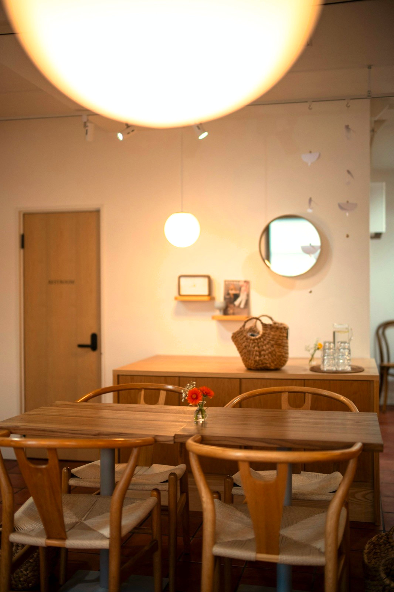
[White Balance] Setting=Custom, raised Temperature) rendered by
rawtherapee-cli — natural tones, no artifacts. This is the path Sharp pixel
math replaced.
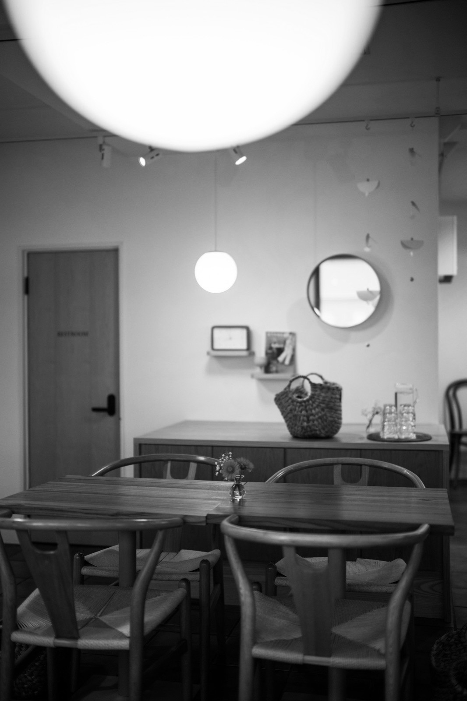
noir
.pp3 base, layered under the agent delta, yields a clean high-contrast
monochrome grade — confirming the -p look.pp3 -p delta.pp3 layering works.
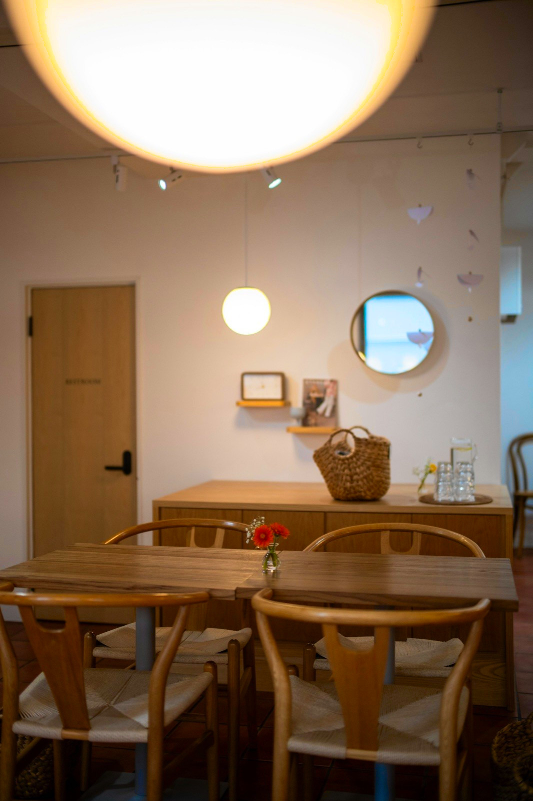
[Vibrance] Pastels with ProtectSkins=true, the result is
saturated but natural; skin and already-vivid hues are protected.
RtSandboxEngine runs RawTherapee inside a @vercel/sandbox microVM
with per-session warm-VM reuse: one upload of the original, then N renders against the
same VM, with dispose stopping the VM in the loop's finally. A
pre-baked snapshot ships RawTherapee plus the look profiles so session start is a fast
create-from-snapshot, not a reinstall. If auth or the snapshot is missing the engine degrades
gracefully (sandbox → local → sharp) and never hard-crashes a render. This sprint is backend
only — no screenshot; the live verification numbers are below.
=== Sprint 2 live verification (iad1 microVM, 2026-06-17) ===
RawTherapee 5.11 (AppImage, pinned) -- 5.12 needs glibc 2.35;
Amazon Linux 2023 ships 2.34
Cold create ~307 ms create-from-snapshot (RT already baked, no dnf/AppImage step)
Warm reuse ~930 ms second in-loop render, no re-upload of the original
Full loop create -> upload original -> writeFiles delta.pp3 -> runCommand
-> readFileToBuffer -> 268 KB clean JPEG, frames stream to timeline
Dispose run aborted mid-loop -> finally calls dispose() -> sandbox.stop();
no leaked VM (confirmed via vercel sandbox ls)
Degradation missing snapshot/auth -> falls back local -> sharp, one-line warn
Snapshot id RT_SNAPSHOT_ID=snap_iqiVWshEU5lx18IFYzbvR7ObFNGm
(set in Vercel project, dev + prod; expires 30d after last use)
Grew the flat DevelopConfig by 12 fields — a parametric 4-zone tone curve
(tcHighlights/tcLights/tcDarks/tcShadows), independent shadow/highlight
split-toning, dehaze, and luminance/chroma noise reduction — without breaking the
flat-schema discipline that guards against the Sonnet JSON-repetition loop. Held across 5 real
model runs at the doubled field count with zero AI_JSONParseError. Each new
control was pixel-graded against the binary, and the parametric tone-curve slot order was
verified directly (highlights → lights → darks → shadows).
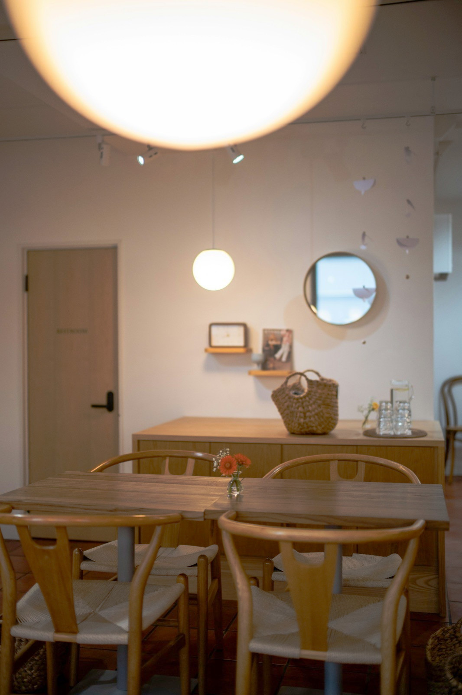
Curve=2;…;h;l;d;s; slot order is highlights-first, positive = brighten.
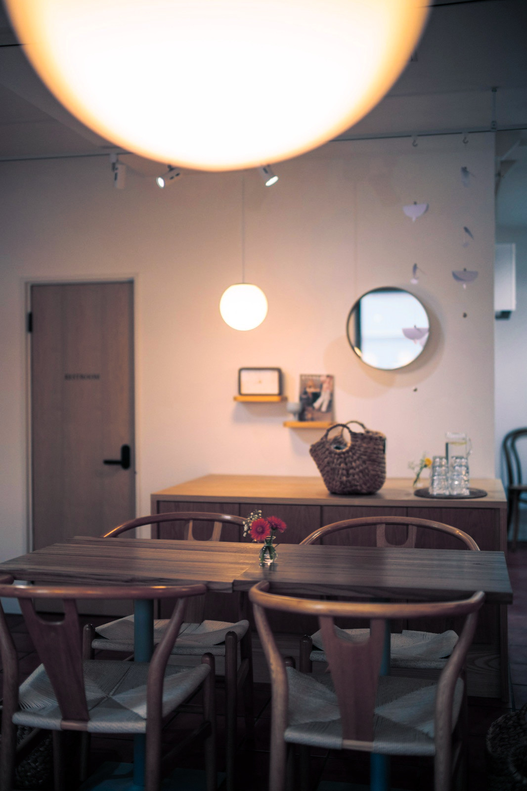
Method=Splitco,
Autosat=false: shadows go bluer (mean B 94.7 → 109.6), highlights keep a warm
lean, channel order stays natural — no whole-image green. Compare the bug callout below.
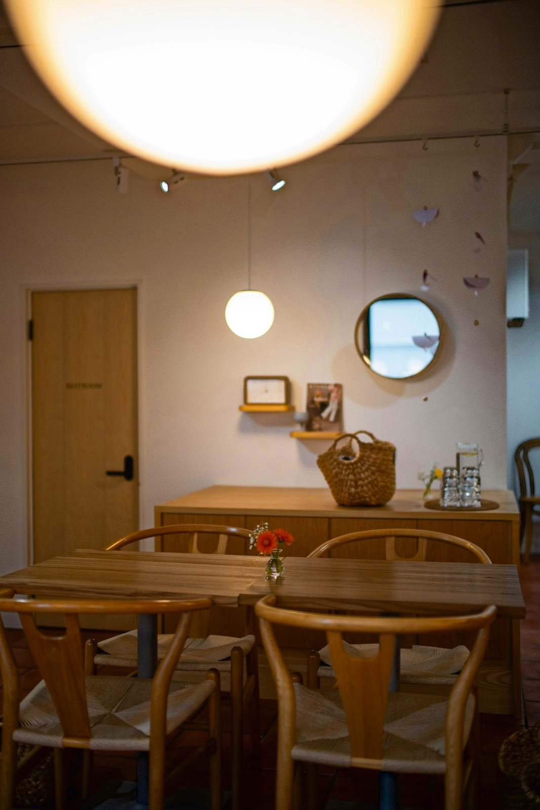
Strength=80 deepened mean
luminance (117.4 → 102.1) and raised local high-frequency detail (1.32 → 1.43) — the
expected direction for haze removal.
Luma=80 Chroma=80 cut local
high-frequency energy (1.32 → 0.87, ≈34% smoother) via
[Directional Pyramid Denoising] Method=Lab.
Replaced the bespoke fetch/SSE client in index.vue with
@ai-sdk/vue's useChat (deleting ~95 lines of stream plumbing).
Multi-turn refinement ("now make it cooler") appends frames onto the last result via
sendMessage(…, { body: { id, fromStep } }) rather than restarting. The
deciding part was made non-transient so the spinner survives a re-render. While
verifying, a second neon bug surfaced — split-tone tinting the whole image green — and was
fixed by switching the mapper from RGBSliders to Splitco. A full
"warmer → cinematic" conversation converges in 5 steps.
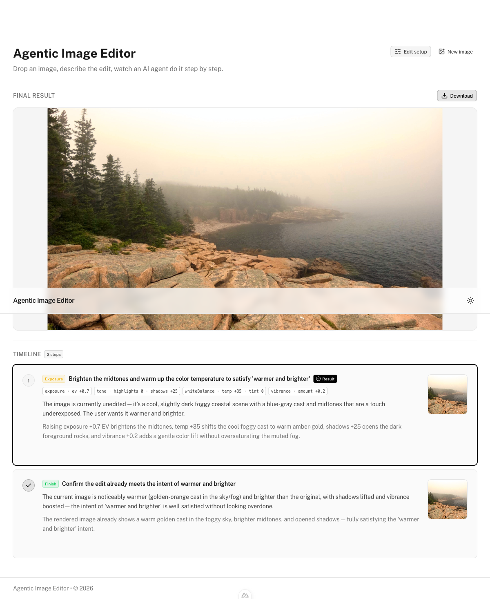
data-step parts
render as timeline cards as each render completes — the SSE-to-useChat swap preserved the
streaming behavior exactly.
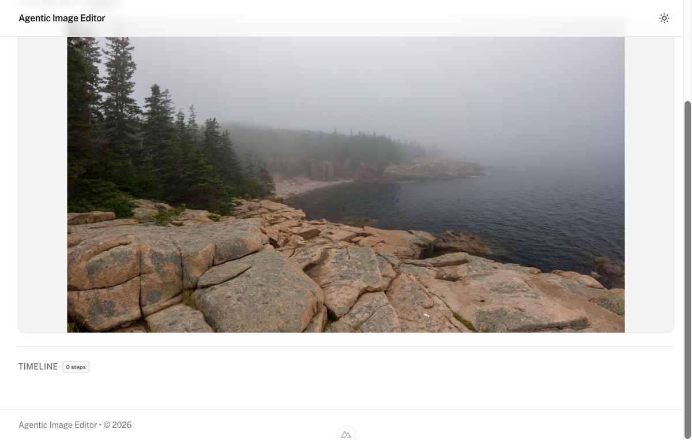
deciding part
non-transient keeps the "thinking" indicator on screen through re-renders instead of
flickering out — the fix for the disappearing-spinner edge.
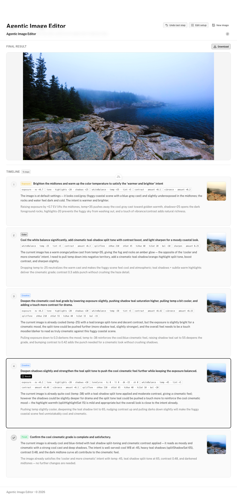
fromStep) and adds new timeline steps on
top of the existing run — confirming refinement is additive, not a fresh session.
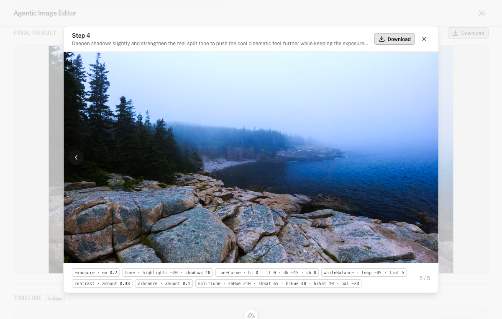
ImageLightbox component
survived the client refactor.
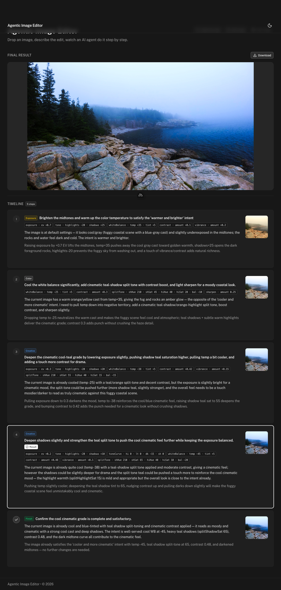
useChat migration.
[Vibrance] Pastels with ProtectSkins=true — never to
[Exposure] Saturation. Verified clean at vibrance 0.9
(sprint1_rtlocal_vibrance_clean.jpg).
Method=RGBSliders as a partial PP3. Without the GUI-authored
OpacityCurve/ColorCurve keys it requires, RawTherapee fell back to
a broken default curve that tinted the entire frame a violent neon green (channel
stats on the old render: R=75, G=128, B=110 — green dominant, red crushed). Fixed by
switching to Method=Splitco with Autosat=false and per-zone
Saturation;Hue; pairs, which needs no curves. The regenerated proof shows
natural channel order (R=126 > G=112) with teal shadows.
How a single edit flows through the system end to end — the agent reasons in semantic sliders, the server deterministically renders, and refinement is additive.
original.jpg for the session.DevelopConfig — pure semantic sliders, no PP3.-p look.pp3 -p delta.pp3 -c original.jpg — locally in dev, or in the warm Sandbox VM in prod.data-step frame streamed to the timeline via useChat.fromStep — it does not restart the session.The Sprint 4 screenshots above trace this golden path in order: sprint4_timeline_streaming.png (steps 4–5, frames streaming) → sprint4_deciding_spinner.png (step 2, the agent deciding) → sprint4_multiturn_appended.png (step 6, refinement appending).
Real findings that diverged from the plan's initial assumptions — all resolved against the binary.
| Area | Plan assumed | Shipped reality |
|---|---|---|
| Tone-curve section | [ToneCurve] section |
No such section exists; the tone curve lives in [Exposure] (Curve=/CurveMode). Mapper corrected. |
| Sandbox RT version | Latest (5.12) AppImage | RawTherapee 5.11 — 5.12's bundled libjxl needs GLIBC_2.35; Amazon Linux 2023 ships glibc 2.34. PP3 keys are stable across 5.10–5.12. |
| Split-tone method | Method=RGBSliders |
Method=Splitco + Autosat=false. RGBSliders as a partial PP3 tinted the whole image green (needs GUI-authored curve keys). |
| Tone-curve slot order | Shadows-first (inferred) | Highlights-first — verified by single-slider renders (slot 4 = highlights … slot 7 = shadows, positive = brighten). |
| Variable | Required | Description |
|---|---|---|
RT_EXECUTION |
no | sandbox | local | sharp — selects the runner. Production default is sandbox; dev default local. |
RT_BIN |
dev only | Path to local rawtherapee-cli for RT_EXECUTION=local. Unused by the sandbox runner. |
RT_SNAPSHOT_ID |
for sandbox |
Snapshot id from scripts/build-rt-snapshot.ts (current: snap_iqiVWshEU5lx18IFYzbvR7ObFNGm). Expires 30d after last use. |
VERCEL_OIDC_TOKEN |
for sandbox (dev) |
From vercel env pull; ~12h TTL in dev. Injected automatically in Vercel deploys. |
cd src && set -a && . ./.env.local && set +a \
&& node --experimental-strip-types scripts/build-rt-snapshot.ts
# then: vercel env add RT_SNAPSHOT_ID {development,production} && vercel env pull .env.local